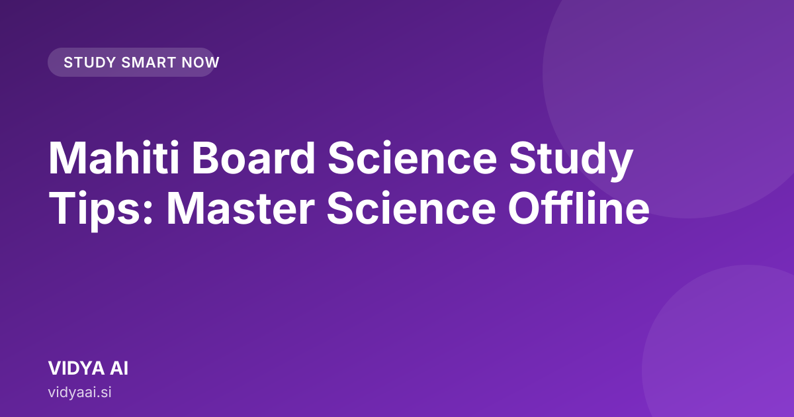

Mahiti Board Science Study Tips: Master Science Offline

If you are preparing for the Maharashtra Board Science exams, knowing the right mahiti board science study tips is crucial. Science can seem vast, especially with topics like Physics, Chemistry, and Biology. This guide provides practical, step-by-step strategies to help you master these subjects effectively, even without constant internet access, using the power of AI.
How to Approach Science Subjects for Maharashtra Board Exams?
Science is not just about memorizing formulas and definitions; it’s about understanding how things work. For the Maharashtra Board, a balanced approach is key. You need to cover theory, practical applications, and numerical problems.
Breaking Down the Syllabus
Do not try to study the entire Science syllabus in one sitting. The syllabus is extensive. First, break it down chapter by chapter.
- Identify Weak Areas: Look at your previous test papers. Which chapters or concepts do you consistently struggle with? Focus on those first.
- Time Allocation: Allocate more time to chapters that carry significant marks in the SSC exam.
- Concept Mapping: For every chapter, create a simple mind map. Start with the main topic in the center and branch out to sub-topics, formulas, and key examples. This helps in quick revision.
The Power of Active Recall
Passive reading—just reading the textbook—is not enough for Science. You must actively engage with the material.
Instead of rereading a paragraph on Newton's Laws, try to explain the law out loud to an imaginary student. This process, called active recall, forces your brain to retrieve the information, which strengthens memory.
Using VIDYA AI for Difficult Science Concepts (Physics & Chemistry)
Physics and Chemistry often involve abstract ideas or complex reactions. Understanding why something happens is harder than knowing what happens. This is where smart study tools become essential.
Tackling Physics Problems
Physics requires a strong foundation in concepts before tackling numerical problems.
- Understand the Principle: Before looking at a formula like $F = ma$, understand what Force ($F$) and Mass ($m$) represent in real life. Use examples, like pushing a heavy cart versus a light one.
- Formula Derivations: Don't just memorize formulas. Try to understand how they are derived. Knowing the derivation helps you apply the formula correctly in different scenarios.
- Step-by-Step Guidance: When you get a numerical problem wrong, don't just check the answer. Understand where you made the mistake—was it the unit conversion, the selection of the correct formula, or the algebraic manipulation?
Demystifying Chemical Reactions
Chemistry can be overwhelming due to its vast terminology and reactions.
- Reaction Types: Group reactions into types: Combination, Decomposition, Displacement, etc. Understanding the type helps you predict the outcome.
- Balancing Equations: Practice balancing equations until it becomes second nature. Treat it like a puzzle where you must ensure the number of atoms of each element is the same on both sides.
- Conceptual Clarity: When studying concepts like acidity or redox reactions, focus on the core chemical principles, not just the definitions.
Mastering Biology Diagrams and Processes with AI
Biology is visual. It involves complex structures, life cycles, and intricate processes. Simply looking at a textbook diagram is rarely enough for board exams.
Decoding Complex Diagrams
For topics like the human digestive system or the structure of a cell, labeling and understanding the function of each part is crucial.
- Labeling Practice: Practice labeling diagrams repeatedly. Cover the labels and try to recall them.
- Function Association: Do not just memorize the name of an organ (e.g., Nephron). Memorize its function (filtering blood) and location simultaneously.
- Flowcharts for Processes: For processes like photosynthesis or respiration, use flowcharts. Show the starting point, the inputs, the intermediate steps, and the final outputs.
Understanding Life Cycles and Processes
Life processes involve sequences. If you miss one step, the entire process fails.
- Sequential Learning: Learn life cycles (e.g., of a frog or a plant) in chronological order.
- AI Assistance: If you are stuck on a specific step in a complex process, an Offline AI tutor for Maharashtra Board can walk you through it step-by-step, ensuring you don't skip any vital stages.
Leveraging Bilingual Support (Marathi & English) for Better Understanding
Many students find that the technical vocabulary of Science is easier to grasp in one language but the conceptual explanation is clearer in another. This is where bilingual learning shines.
Bridging Language Gaps
When you encounter a difficult scientific term in English (like 'Osmosis'), you might know the general idea, but the precise definition might be unclear.
- Concept Translation: Use the bilingual feature to translate the concept, not just the word. Ask, "Explain the concept of Osmosis in simple Marathi." This allows you to solidify the idea in your mother tongue first.
- Vocabulary Building: Simultaneously, learn the precise English scientific term alongside its Marathi equivalent. This is vital for writing exam answers correctly.
- Deeper Dive: Once you understand the concept in Marathi, switch to English to learn the formal, textbook-standard terminology required for the board exam.
Step-by-Step Guide: How to Use VIDYA AI for Science Study at Home
For students who prefer self-study at home, especially when internet connectivity is an issue, a dedicated offline tool is a game-changer. This is where mahiti board science study tips meet modern technology.
Setting Up Your Offline Study Routine
- Download and Install: First, ensure you have downloaded and installed the application. Since it works offline, you can study anywhere without worrying about data limits.
- Select the Subject: Open the app and select 'Science' for the Maharashtra State Board.
- Target a Topic: Don't start with the whole chapter. Pick one small, difficult topic (e.g., "Refraction of Light").
- Engage with the AI: Use the AI tutor to explain the topic. You can ask it to simplify the language, provide real-life examples relevant to Indian scenarios, or explain it in Marathi.
- Practice and Test: After the explanation, use the built-in practice modules to test your understanding. Review the mistakes immediately.
Checklist for Effective Science Study with AI
| Step | Action | Goal |
|---|---|---|
| 1. Identify | Pinpoint the weak topic in the chapter. | Focus effort where it matters most. |
| 2. Explain | Ask the AI to explain the topic (in English or Marathi). | Build foundational conceptual clarity. |
| 3. Relate | Ask for a real-life example or application. | Connect theory to practical reality. |
| 4. Test | Take a short quiz generated by the AI. | Check immediate understanding. |
| 5. Revise | Review the concepts you got wrong. | Solidify weak areas for long-term memory. |
If you want a comprehensive, structured way to manage your preparation, check out VIDYA AI. It is designed specifically to make the Maharashtra Board curriculum accessible to everyone, anytime.
Conclusion
Mastering Science for the Maharashtra Board requires more than just reading; it demands active engagement, conceptual clarity, and smart revision techniques. By adopting these mahiti board science study tips—breaking down topics, practicing active recall, leveraging bilingual support, and using tools like an offline AI tutor—you can transform challenging subjects into manageable and scoring parts of your exam. Start applying these steps today and build a strong foundation for success in your SSC Science preparation.
Frequently asked questions
Is VIDYA AI suitable for both Marathi and English learners?
Yes, VIDYA AI is bilingual, allowing students to switch between Marathi and English to understand complex Science topics in whichever language helps them learn best.
What is the best way to study Science for the Maharashtra Board?
Instead of passive reading, use active recall by explaining concepts out loud. Balance theory, practical applications, and numerical problems for comprehensive understanding.
How can I use AI for difficult Science topics like Physics and Chemistry?
Use offline AI tools to understand the principles behind formulas and derivations. This helps you grasp the 'why' before focusing on solving complex numerical problems.
How should I structure my study plan for the Science syllabus?
Start by identifying your weak areas from previous tests. Then, allocate more time to high-weightage chapters and create simple mind maps for quick revision.